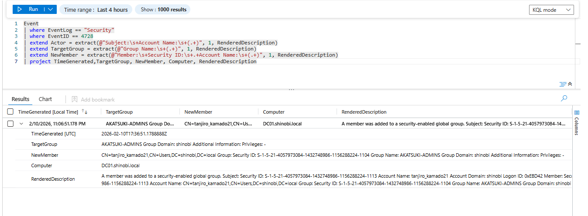
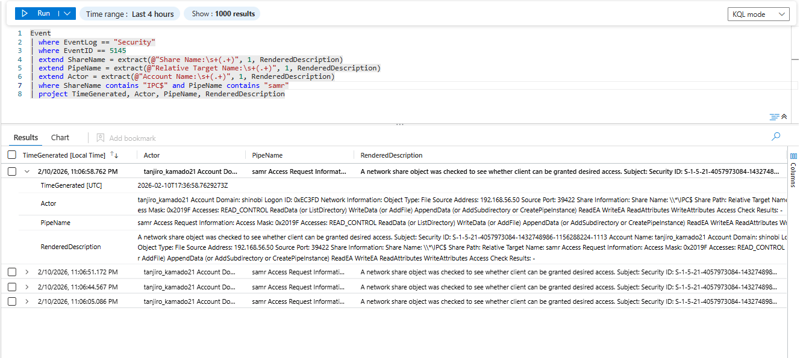

Detection & Telemetry (GenericWrite on Group)
Attack Vector: The attacker (tanjiro_kamado21) possessed GenericWrite privileges on the AKATSUKI-ADMINS group. They abused this by writing to the member attribute of the group object, effectively adding themselves to the group to inherit administrative privileges.
Key Log Sources:
• Event ID 4728: A member was added to a security-enabled global group.
• Event ID 5136: A directory service object was modified (Granular attribute change).
Objective: Detect the exact moment the unauthorized user added themselves to the privileged group.
Logic: We filter for Event ID 4728 (Member Added). The primary indicator of compromise (IoC) is that the Subject (the user performing the add) is tanjiro_kamado21, a low-privileged account, rather than a Domain Admin or a delegated Identity Management service account.
KQL Query:
Event
| where EventLog == "Security"
| where EventID == 4728
| extend Actor = extract(@"Subject:\s+Account Name:\s+(.+)", 1, RenderedDescription)
| extend TargetGroup = extract(@"Group Name:\s+(.+)", 1, RenderedDescription)
| extend NewMember = extract(@"Member:\s+Security ID:\s+.+Account Name:\s+(.+)", 1, RenderedDescription)
| project TimeGenerated, Actor, TargetGroup, NewMember, Computer
Analysis:
shinobi\tanjiro_kamado21tanjiro_kamado21 to AKATSUKI-ADMINS.GenericWrite permission. In a secure environment, standard users should never have the ability to modify the membership of "Admin" groups.
Objective: Confirm the method of execution. Logic: Since the attack was performed from Kali Linux using net rpc (Samba), it utilized the SAMR (Security Account Manager Remote) protocol over a named pipe. We can look for the specific pipe access coupled with the group change.
KQL Query:
Event
| where EventLog == "Security"
| where EventID == 5145
| extend ShareName = extract(@"Share Name:\s+(.+)", 1, RenderedDescription)
| extend PipeName = extract(@"Relative Target Name:\s+(.+)", 1, RenderedDescription)
| extend Actor = extract(@"Account Name:\s+(.+)", 1, RenderedDescription)
| where ShareName contains "IPC$" and PipeName contains "samr"
| where Actor has "tanjiro_kamado21"
| project TimeGenerated, Actor, PipeName, AccessMask
Analysis:
samr pipe access events from tanjiro_kamado21 immediately preceding the Event 4728 log confirms the use of a remote tool (like net rpc or rpcclient) rather than Active Directory Users & Computers (ADUC).
{kind=link}
{kind=link}